library(tidyverse)Mathematical tools in R
Load the tidyverse package which includes dplyr, ggplot2 and others.
Remove all objects in the current workspace.
rm(list=ls())Arithmetic operations in R
Here are some basic arithmetic operations. The comments explain each operation.
2+1 # Add 2 and 1[1] 34-2 # Subtract 2 from 4[1] 22*3 # Multiply 2 by 3[1] 61/5 # Divide 1 by 5[1] 0.22^3 # 2 raised to the power of 3[1] 88^(1/3) # Cube root of 8[1] 28^1/3 # This might not be what you want; it's 8 to the power of 1, then divided by 3[1] 2.666667Checking equality
Use == to check for equality. Be aware of floating-point precision issues.
4-2==2 # Check if 2 equals 2[1] TRUE1==.9999999999999 # Check if 1 is approximately equal to 1 with 13 decimal places[1] FALSEAssignment of values to variables
Values are assigned to variables using the <- operator.
a <- 2 # Assign value 2 to variable a
b <- 5 # Assign value 5 to variable b
a # Print value of a[1] 2b # Print value of b[1] 5c <- 3 ; c # Assign value 3 to variable c and then print its value[1] 3Basic arithmetic operations using variables
a + b # Add values of a and b[1] 7a / b # Divide value of a by value of b[1] 0.4Comparisons
a > b # Check if a is greater than b[1] FALSEa < b # Check if a is less than b[1] TRUE# Reassign value 5 to variable c
c <- 5
a*c < b*c # Check if product of a and c is less than product of b and c[1] TRUE# Reassign value -4 to variable c
c <- -4
a*c < b*c # Check if product of a and c is less than product of b and c[1] FALSERounding numbers
round(1/3,4) # Round 1/3 to 4 decimal places[1] 0.3333round(2*4.7536,2) # Round product of 2 and 4.7536 to 2 decimal places[1] 9.51Various mathematical operations
This section demonstrates how R handles edge cases like powers of zero, division by zero, and infinity.
2^0 # 2 raised to the power of 0[1] 1223^0 # 223 raised to the power of 0[1] 12/0 # Dividing by zero gives positive infinity[1] Inf-10/0 # Dividing a negative number by zero gives negative infinity[1] -Inf0.8^Inf # 0.8 raised to the power of infinity, x^Inf when 0 < x < 1 is equal to zero[1] 02^Inf # 2 raised to the power of infinity[1] InfHandling scientific notation
R uses scientific (exponential) notation for very large or very small numbers. The scipen option can be used to control this behavior.
a <- 510000
b <- 0.00000034
a*b # Multiply a and b[1] 0.1734a/b # Divide a by b[1] 1.5e+12options(scipen=15) # Force R not to use exponential notation
a / b[1] 1500000000000b / a[1] 0.0000000000006666667options(scipen=FALSE) # Allow R to use exponential notation again
b / a[1] 6.666667e-13Work with logarithms
The log() function computes the natural logarithm. We can force R not to use exponential notation for better readability of large numbers.
options(scipen=999) # Force R not to use exponential notation
# Using map_dbl from purrr to iterate over 1:7 and perform calculation
x <- map_dbl(1:7, ~10^(.x - 1))
# Create a data frame with x and its log
table <- tibble(x=x, log_x=log(x))
# Display the table
table# A tibble: 7 × 2
x log_x
<dbl> <dbl>
1 1 0
2 10 2.30
3 100 4.61
4 1000 6.91
5 10000 9.21
6 100000 11.5
7 1000000 13.8 A key property of logarithms is that the log of a product is the sum of the logs: \(log(A \cdot B) = log(A) + log(B)\).
log(1000*10000) # Logarithm of product of 1000 and 10000[1] 16.1181log(1000)+log(10000) # Sum of logarithm of 1000 and logarithm of 10000[1] 16.1181log(1000*10000)==log(1000)+log(10000) # Check if they are equal[1] TRUEThe exponential function exp() is the inverse of the natural logarithm. exp(1) gives Euler’s number, \(e\).
a <- log(10*100)
a[1] 6.907755exp(a) # Exponential function to reverse the logarithm[1] 1000exp(1) # e to the power of 1[1] 2.718282log(exp(1)) # Logarithm of exponential function[1] 1Plot of the natural logarithm function.
# Plot of natural logarithm
curve(log(x), from=0, to=100, main="Natural logarithm")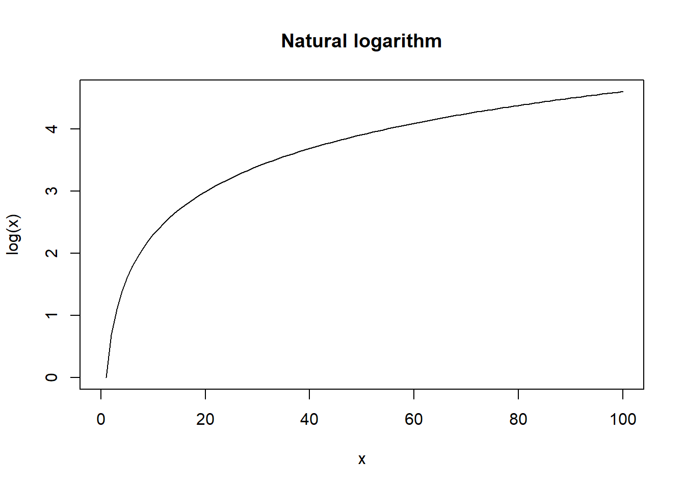
# Same plot but with larger range
curve(log(x), from=0, to=1000000, main="Natural logarithm")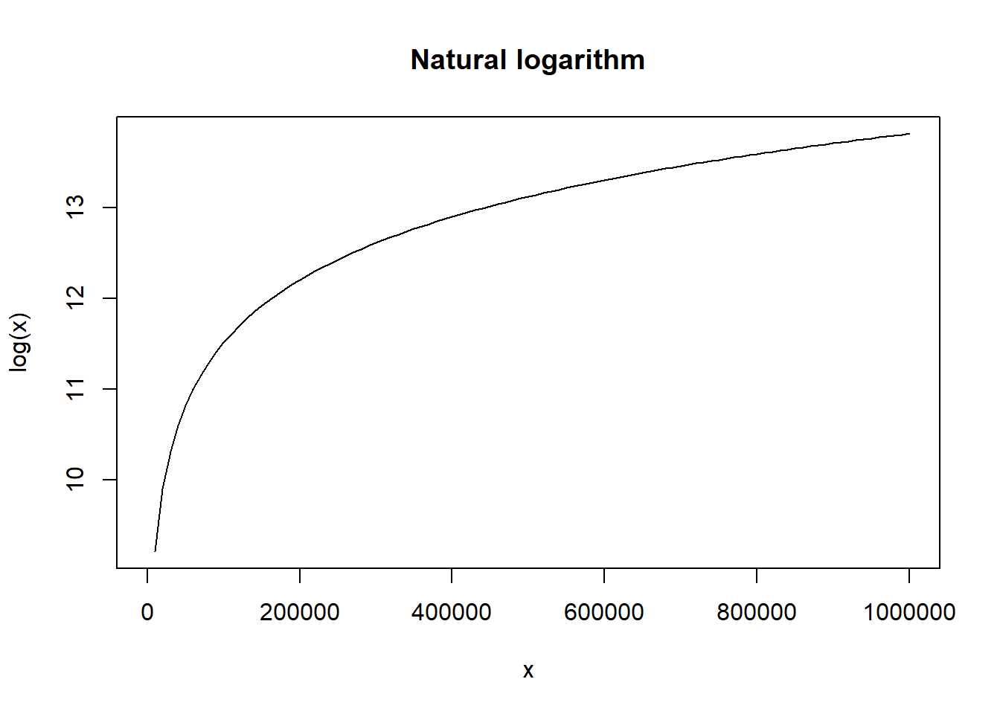
Function definition and usage
Define a custom function f to compute the logarithm.
f <- function(x) { log(x) } # Define a function f to compute logarithm
f # Display function definitionfunction (x)
{
log(x)
}f(100) # Apply function to value 100[1] 4.60517log(100) # Logarithm of 100[1] 4.60517Work with decimals and percentages
For small changes, the difference in logs multiplied by 100 is a good approximation of the percentage change.
y <- c(3,3.02) # Create a vector y
y[1] 3.00 3.02diff(y) # Difference between elements of y[1] 0.02diff(y)/y[1] # Relative difference[1] 0.006666667100*diff(y)/y[1] # Percentage difference[1] 0.6666667lny <- log(y) # Logarithm of y
100*diff(lny) # Percentage difference of logarithm values[1] 0.6644543Let’s examine the approximation error.
y <- seq(1,1.25,0.05) # Create a sequence from 1 to 1.25 with increments of 0.05
y <- c(1,y[1]+0.01,y[-1]) # Add an element to the vector y
y[1] 1.00 1.01 1.05 1.10 1.15 1.20 1.25percent <- 100*(y-y[1])/y[1] # Compute percentage difference from the first element
logdiff <- 100*(log(y)-log(y[1])) # Compute percentage difference of logarithms from the first element
approx.error <- 100*((percent-logdiff)/logdiff) # Compute approximate error
table <- cbind(y, percent, logdiff, approx.error) # Bind columns to form a table
table y percent logdiff approx.error
[1,] 1.00 0 0.0000000 NaN
[2,] 1.01 1 0.9950331 0.4991708
[3,] 1.05 5 4.8790164 2.4796716
[4,] 1.10 10 9.5310180 4.9205869
[5,] 1.15 15 13.9761942 7.3253544
[6,] 1.20 20 18.2321557 9.6962990
[7,] 1.25 25 22.3143551 12.0355029table[-1,] # Remove the first row y percent logdiff approx.error
[1,] 1.01 1 0.9950331 0.4991708
[2,] 1.05 5 4.8790164 2.4796716
[3,] 1.10 10 9.5310180 4.9205869
[4,] 1.15 15 13.9761942 7.3253544
[5,] 1.20 20 18.2321557 9.6962990
[6,] 1.25 25 22.3143551 12.0355029Understanding linear relationships
Clear the workspace.
rm(list=ls())Define a simple linear function \(f(x) = 1 + x\).
f <- function(x) { 1+1*x }
# Evaluate the function at x=0 to get the intercept
f(0)[1] 1Calculate the slope (rise over run) between two points.
x1 <- 2
x2 <- 4
m <- (f(x2) - f(x1)) / (x2 - x1)
rise <- f(x2) - f(x1)
run <- x2 - x1
print(paste("Slope:", m))[1] "Slope: 1"print(paste("Rise:", rise))[1] "Rise: 2"print(paste("Run:", run))[1] "Run: 2"Plot the linear function.
ggplot(data.frame(x = c(-3, 10)), aes(x)) +
stat_function(fun = f, geom = "line") +
geom_vline(aes(xintercept = 0), color = "red") +
geom_hline(aes(yintercept = 0), color = "red") +
geom_point(aes(x = x1, y = f(x1)), color = "blue", size = 3) +
geom_point(aes(x = x2, y = f(x2)), color = "green", size = 3) +
labs(title = "A linear relationship", x = "x", y = "y") +
coord_fixed(ratio = 1) + # This will ensure a square aspect ratio
theme_minimal()Warning in geom_point(aes(x = x1, y = f(x1)), color = "blue", size = 3): All aesthetics have length 1, but the data has 2 rows.
ℹ Please consider using `annotate()` or provide this layer with data containing
a single row.Warning in geom_point(aes(x = x2, y = f(x2)), color = "green", size = 3): All aesthetics have length 1, but the data has 2 rows.
ℹ Please consider using `annotate()` or provide this layer with data containing
a single row.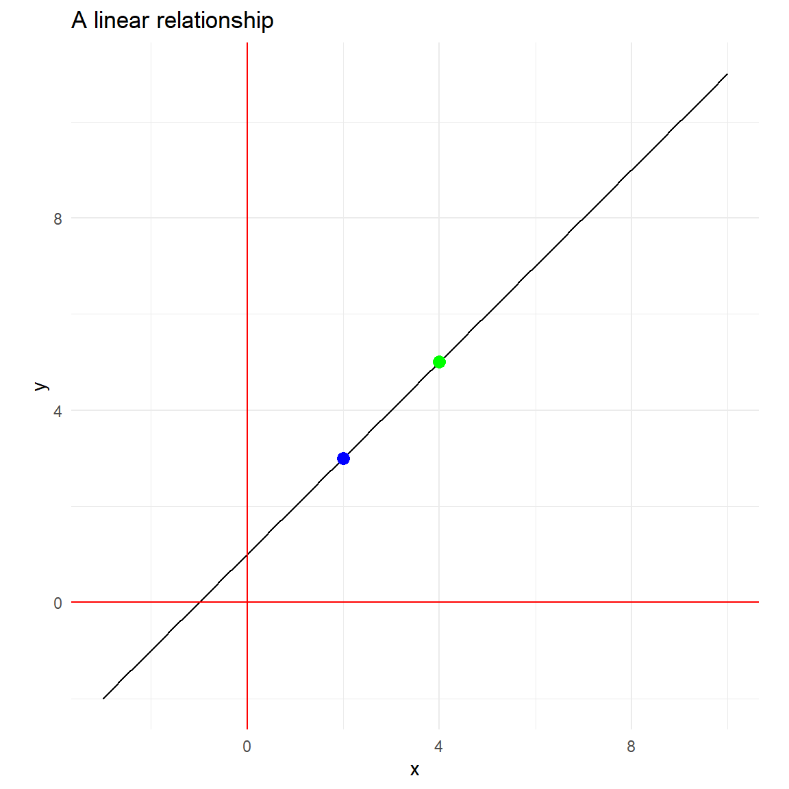
Derive the function to obtain its slope (derivative).
D(expression(1+1*x), "x")[1] 1Plot the elasticity (a measure of responsiveness) of the function. Let’s define a new linear function \(f(x) = 1 + 2x\). The elasticity is given by \(\frac{dy}{dx} \cdot \frac{x}{y}\). For this function, the elasticity is \(\frac{2x}{1+2x}\).
f <- function(x) { 1+2*x }
elasticity <- function(x) { 2*x/f(x) }
elasticity(1)[1] 0.6666667# Create a plot
ggplot(data.frame(x = c(0.1, 10)), aes(x)) +
stat_function(fun = elasticity, geom = "line") +
geom_vline(aes(xintercept = 1), color = "red") +
geom_hline(aes(yintercept = elasticity(1)), color = "blue") +
labs(title = "Elasticity of y = 1 + 2x at x=1" , x = "x", y = "Elasticity") +
theme_minimal()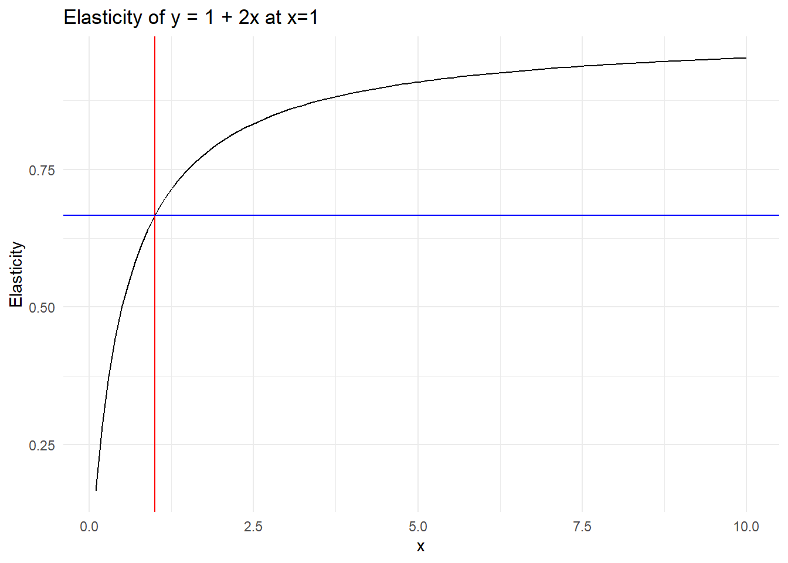
Study of derivatives for nonlinear relationships
Nonlinear relationships.
rm(list=ls())Differentiation rules
Derivative rule 1: Derivative of a constant is 0.
D(expression(c), "x")[1] 0Derivative rule 2: Power rule, \(\frac{d}{dx}(x^n) = nx^{n-1}\).
D(expression(x^n), "x")x^(n - 1) * nDerivative rule 4: Derivative of constant times a power function, \(\frac{d}{dx}(cx^n) = cnx^{n-1}\).
D(expression(c*x^n), "x")c * (x^(n - 1) * n)Derivative rule 7: Derivatives involving exponential functions.
D(expression(exp(x)), "x")exp(x)D(expression(exp(a*x+b)), "x")exp(a * x + b) * aDerivative rule 8: Derivatives involving logarithms.
D(expression(log(x)), "x")1/xD(expression(log(a*x+b)), "x")a/(a * x + b)Example A.1
Differentiate the function \(4x + 1\).
D(expression(4*x+1), "x")[1] 4Example A.2
Plot and differentiate the quadratic function \(y = x^2 - 8x + 16\).
curve(x^2-8*x+16, from=-1, to=10, main="Quadratic function: x^2 - 8x + 16")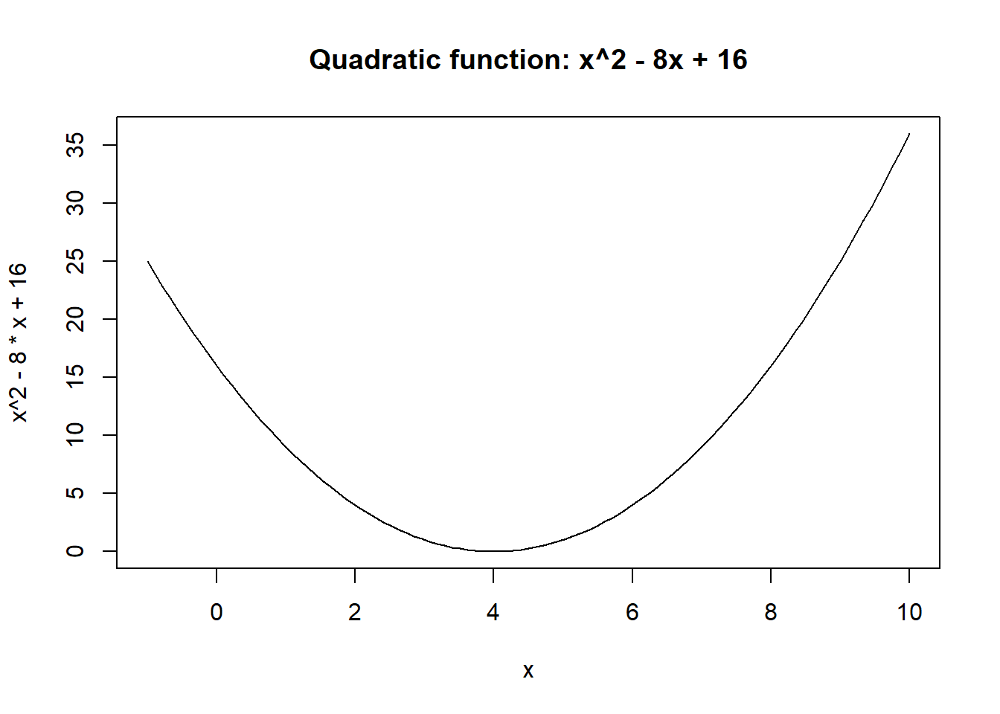
D(expression(x^2-8*x+16), "x")2 * x - 8The slope (derivative) of the \(y=log(x)\) function
The derivative is \(1/x\).
D(expression(log(x)), "x")1/xThe slope \(\frac{dy}{dx}\) as a function.
d <- function(x) { 1/x }
x <- 1:50
d(x) [1] 1.00000000 0.50000000 0.33333333 0.25000000 0.20000000 0.16666667
[7] 0.14285714 0.12500000 0.11111111 0.10000000 0.09090909 0.08333333
[13] 0.07692308 0.07142857 0.06666667 0.06250000 0.05882353 0.05555556
[19] 0.05263158 0.05000000 0.04761905 0.04545455 0.04347826 0.04166667
[25] 0.04000000 0.03846154 0.03703704 0.03571429 0.03448276 0.03333333
[31] 0.03225806 0.03125000 0.03030303 0.02941176 0.02857143 0.02777778
[37] 0.02702703 0.02631579 0.02564103 0.02500000 0.02439024 0.02380952
[43] 0.02325581 0.02272727 0.02222222 0.02173913 0.02127660 0.02083333
[49] 0.02040816 0.02000000plot(x, d(x), type="l", main="The derivative of the log function")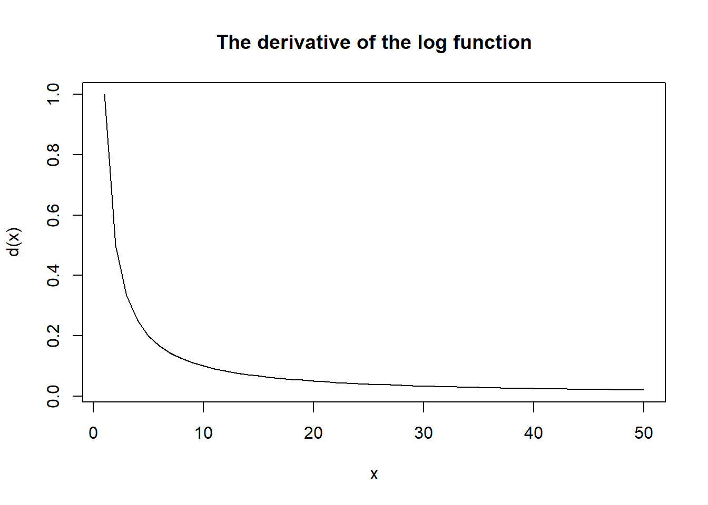
The elasticity of the \(log(x)\) function is given by slope \(\times \frac{x}{y} = \frac{1}{x} \times \frac{x}{log(x)} = \frac{1}{log(x)}\).
e <- function(x) { (1/x)*(x/log(x)) }
# Which simplifies to:
# e <- function(x) { (1/log(x)) }
plot(x, e(x), type="l", main="The elasticity of the log function")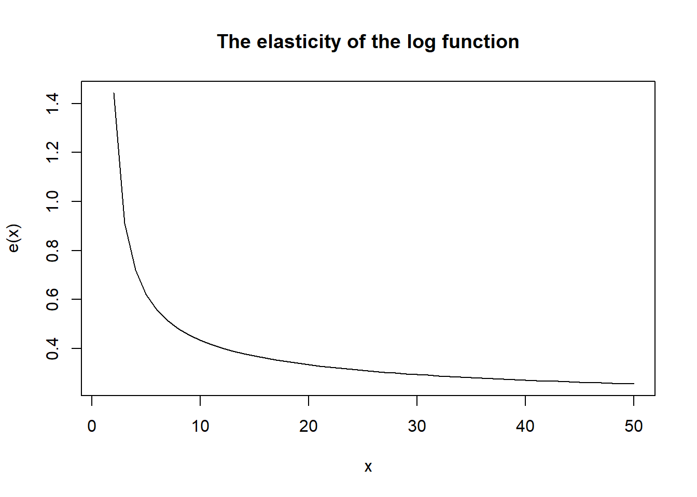
# Calculate elasticity at specific x-values
e(2)[1] 1.442695e(10)[1] 0.4342945Example A.2 (continued)
For the quadratic function \(x^2 - 8x + 16\), calculate and plot its elasticity.
rm(list=ls())
curve(x^2-8*x+16, from=-1, to=10, main="The quadratic function x^2 - 8x + 16")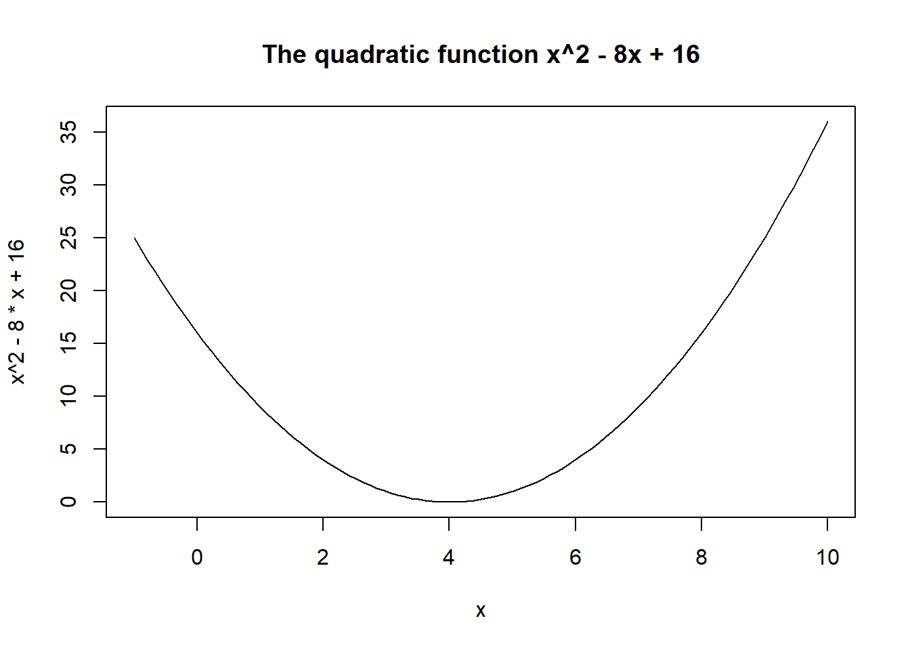
D(expression(x^2-8*x+16), "x")2 * x - 8f <- function(x) { x^2-8*x+16 }
dy <- function(x) { (2*x-8) }
e <- function(x) { (2*x-8)*(x/f(x)) }
x <- seq(0,4,2)
f(x)[1] 16 4 0dy(x)[1] -8 -4 0e(x)[1] 0 -2 NaN# Combine the results in a matrix and plot elasticity
cbind(x,f(x),dy(x),e(x)) x
[1,] 0 16 -8 0
[2,] 2 4 -4 -2
[3,] 4 0 0 NaNcurve(e(x), 0,3.9, main="The elasticity of the quadratic function x^2 - 8x + 16")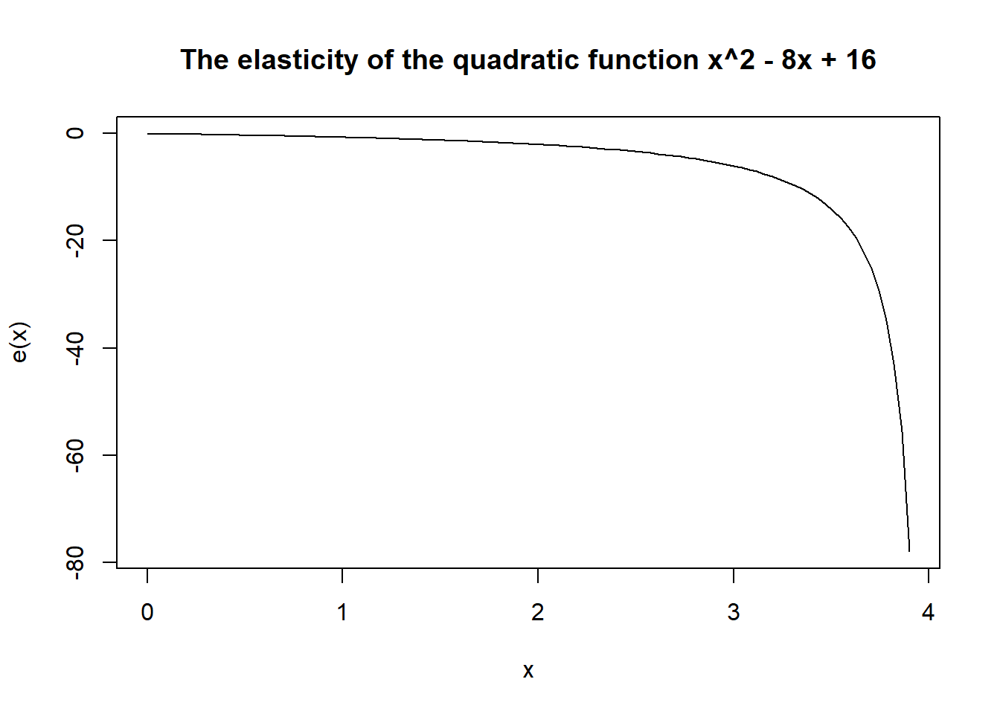
Partial derivative
Find the partial derivative of a multi-variable function with respect to \(x\).
D(expression(a*x^2+b*x+c*z+d), "x")a * (2 * x) + bArea under the curve
This entire section is presented in a non-evaluated code chunk.
# Plot the function 2x and compute the area under the curve for specific intervals
curve(2*x,0,1)
integrand <- function(x) { 2*x }
integrate(integrand, lower = 0, upper = 1)
integrate(integrand, lower = 0.2, upper = 0.6)
0.6^2-0.2^2
# Shade a specific area under the curve on the plot
# We would like to shade the region represented by
# P(0.2 < X < 0.6). The first vertex of our polygon is (0.2,0).
cord.x <- c(0.2)
cord.y <- c(0)
# The second vertex is (0.2,f(0.2)), where f(0.2) is the value on the y axis of 2*x evaluated at 0.2.
cord.x <- c(cord.x,0.2)
cord.y <- c(cord.y,integrand(0.2))
# The third and fourth vertices is (0.6,f(0.6)) and (f(0.6),0).
cord.x <- c(cord.x,0.6,0.6)
cord.y <- c(cord.y,integrand(0.6),0)
curve(2*x,0,1)
polygon(cord.x,cord.y,col='aquamarine3')
# Calculate and display the numerical value of the shaded area on the plot
num <- integrate(integrand, lower = 0.2, upper = 0.6) ; num
str(num)
text(0.4, 0.4, paste(num$value))Exercises, page 764 - 767
Clear the workspace.
rm(list=ls())Load package with dedicated functions.
library(mosaic)Warning: package 'mosaic' was built under R version 4.4.3Registered S3 method overwritten by 'mosaic':
method from
fortify.SpatialPolygonsDataFrame ggplot2
The 'mosaic' package masks several functions from core packages in order to add
additional features. The original behavior of these functions should not be affected by this.
Attaching package: 'mosaic'The following object is masked from 'package:Matrix':
meanThe following objects are masked from 'package:dplyr':
count, do, tallyThe following object is masked from 'package:purrr':
crossThe following object is masked from 'package:ggplot2':
statThe following objects are masked from 'package:stats':
binom.test, cor, cor.test, cov, fivenum, IQR, median, prop.test,
quantile, sd, t.test, varThe following objects are masked from 'package:base':
max, mean, min, prod, range, sample, sumUsing mosaic functions
Define a function using the makeFun utility from the mosaic package:
f <- makeFun(2+3*x ~ x)
f(0) # Evaluate the function at x=0[1] 2f(2) # Evaluate the function at x=2[1] 8Plot the function for \(x\) in \([0,4]\):
plotFun(f(x) ~ x, xlim=c(0,4), ylim=c(0,14), main="The linear function 2+3*x")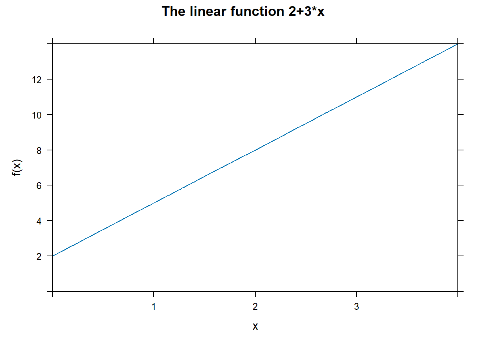
Calculate the derivative of the function with respect to \(x\):
D(expression(2+3*x),"x")[1] 3Define the elasticity function using makeFun:
e <- makeFun(3*x/f(x) ~ x)Plot the elasticity function for \(x\) in \([0,4]\):
plotFun(e(x) ~ x, xlim=c(0,4), col="brown", main="The elasticity of the linear function 2+3*x")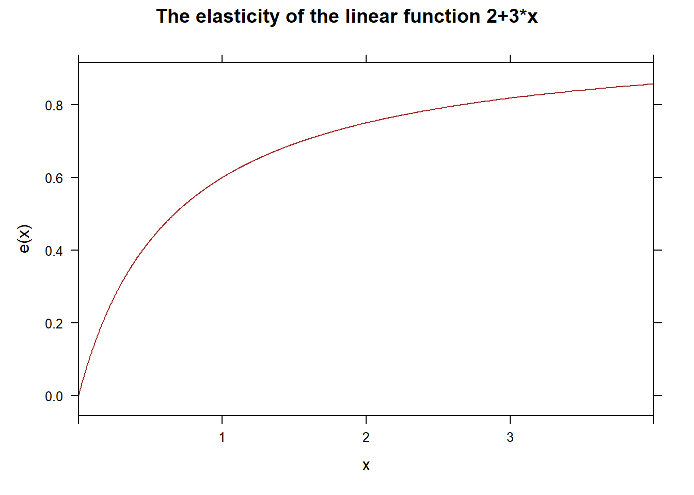
e(1) # Evaluate the elasticity at x=1[1] 0.6Using base R functions
Define the function using base R:
g <- function(x) {2+3*x}
g(0) # Evaluate the function at x=0[1] 2g(2) # Evaluate the function at x=2[1] 8Plot the function for \(x\) in \([0,4]\):
curve(g(x), 0, 4, col="red", main="The linear function 2+3*x")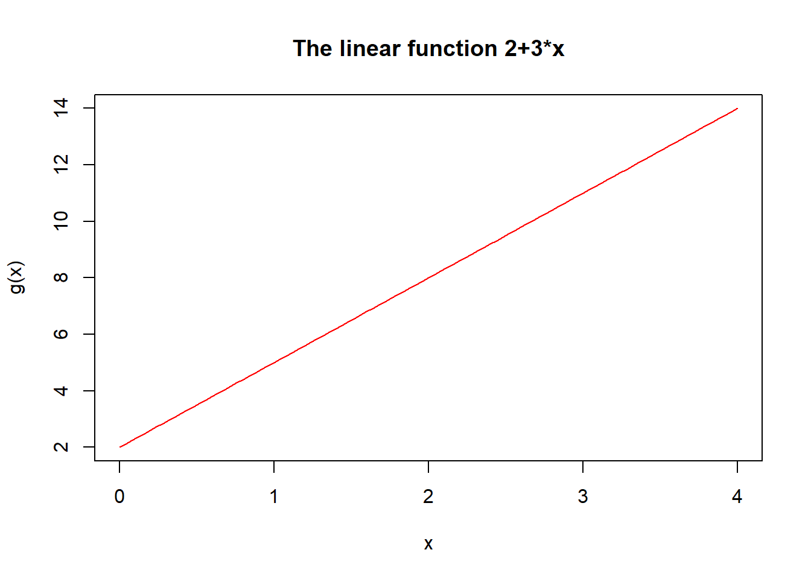
Define the elasticity function using base R:
h <- function(x) {3*x/g(x)}Plot the elasticity function for \(x\) in \([0,4]\):
curve(h(x), 0, 4, col="green", main="The elasticity of the linear function 2+3*x")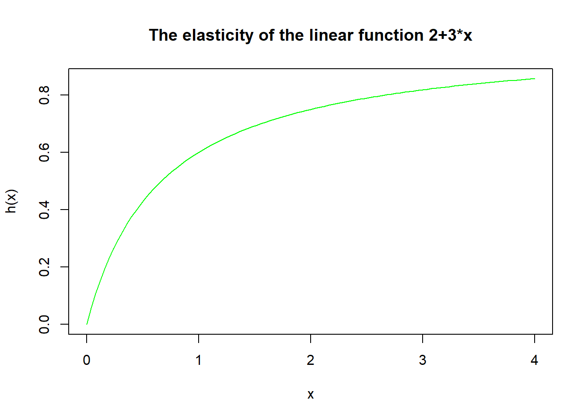
h(1) # Evaluate the elasticity at x=1[1] 0.6Clear the workspace:
rm(list=ls())A.1
1) \(Q = -3 + 2P\)
Define a function \(Q\) in terms of \(P\):
Q1 <- makeFun(-3 + 2*P ~ P)
Q1(0) # Evaluate the function at P=0[1] -3Plot the function for \(P\) in \([0,12]\):
plotFun(Q1(P)~P, xlim = c(0,12), main="The linear function -3+2*P")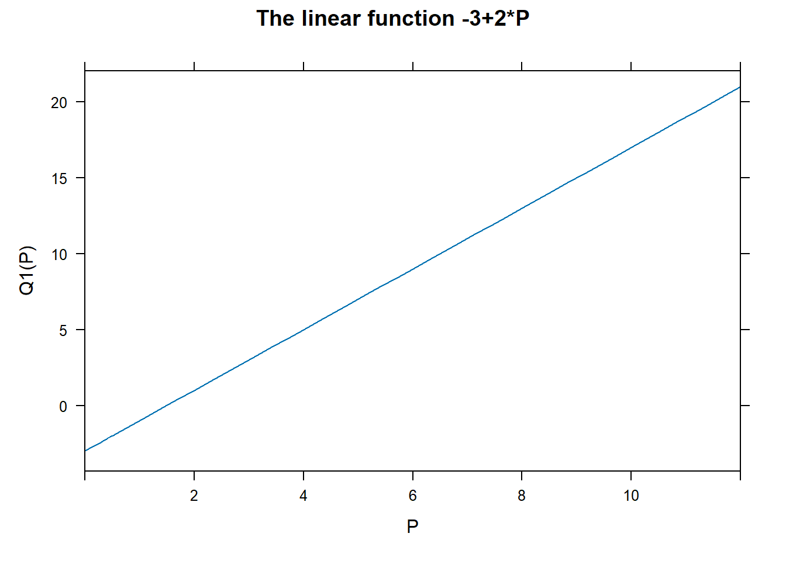
Calculate the slope (derivative) of the function with respect to \(P\):
D(expression(-3 + 2*P),"P")[1] 2Define the slope function:
d1 <- function(P) {2}
d1(2) # Evaluate the slope at P=2[1] 2d1(10) # Evaluate the slope at P=10[1] 2Define and calculate the elasticity as (slope \(\times P / Q\)):
e1 <- function(P) {2 * P/Q1(P)}
e1(10) # Evaluate elasticity at P=10[1] 1.176471e1(P=10) # Another way to evaluate elasticity at P=10[1] 1.176471Plot the elasticity function for \(P\) in \([2,12]\):
plotFun(e1(P) ~ P, xlim = c(2,12), main="The elasticity of the linear function -3+2*P")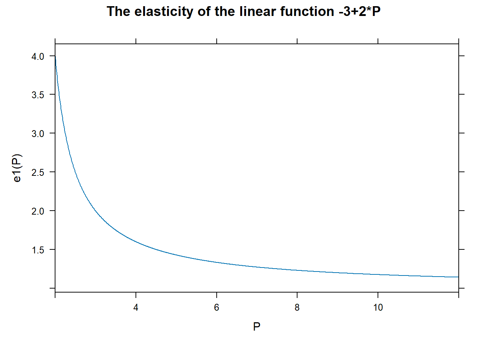
2) \(Q = 100 - 20P\)
Define a linear demand function \(Q\) as a function of price \(P\).
Q2 <- makeFun(100 -20*P ~ P) # Define the function using makeFun
Q2(0) # Evaluate the function when P=0[1] 100Plot the demand curve \(Q\) as a function of \(P\) for the range \([0,12]\).
plotFun(Q2(P)~P, xlim = c(0,12), main="The linear function 100-20*P")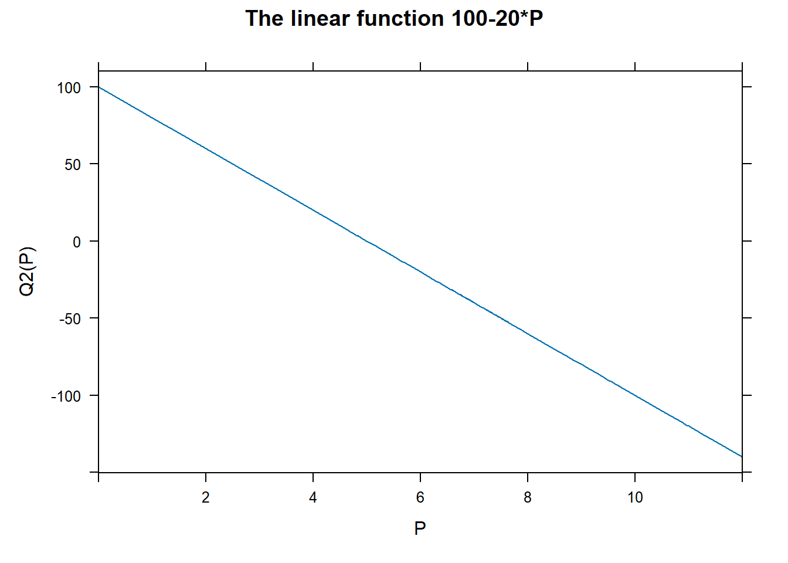
Calculate the slope (first derivative) of the demand function with respect to \(P\).
D(expression(100 -20*P),"P")-20Define a function to represent the constant slope of the demand curve.
d2 <- function(P) {-20}
d2(2) # Evaluate slope at P=2[1] -20d2(10) # Evaluate slope at P=10[1] -20Calculate the elasticity of the demand curve as (slope \(\times P / Q\)).
e2 <- function(P) {-20 * P/Q2(P)}
e2(10) # Evaluate elasticity at P=10[1] 2e2(P=10) # Another way to evaluate elasticity at P=10[1] 2Plot the elasticity as a function of \(P\) for the range \([0,4]\).
plotFun(e2(P) ~ P, xlim = c(0,4), main="The elasticity of the linear function 100-20*P")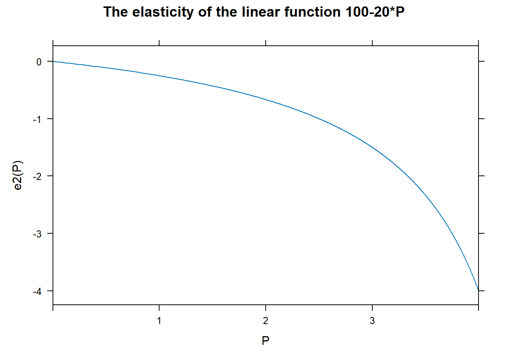
3) \(Q=50P^{-2}\)
Define a non-linear demand function \(Q\) as a function of price \(P\).
Q3 <- function(P) {50*(P^(-2))} # Define the function
Q3(4) # Evaluate the function when P=4[1] 3.125Plot the demand curve \(Q\_3\) as a function of \(P\).
# Data frame for Q3
P_values_q3 <- seq(0.1, 5, by = 0.1)
df_q3 <- data.frame(P = P_values_q3, Quantity = sapply(P_values_q3, Q3))
p_q3 <-
ggplot(df_q3, aes(x = P, y = Quantity)) +
geom_line() +
ggtitle("Q3 as a function of P") +
xlab("P") + ylab("Quantity")
p_q3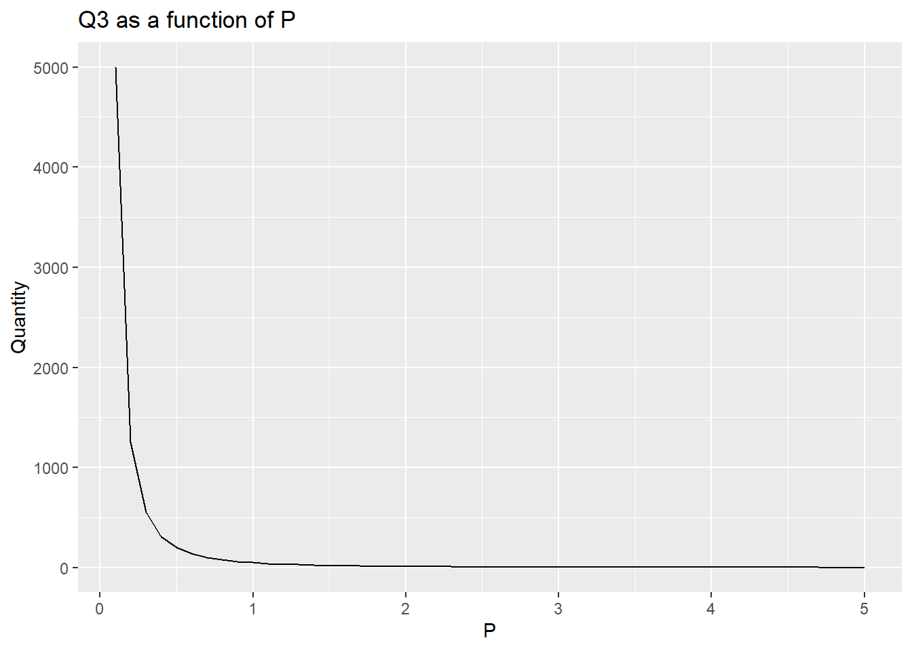
Calculate the slope (first derivative) of the demand function with respect to \(P\).
D(expression(50*P^-2),"P")-(50 * (P^-(2 + 1) * 2))Define a function for the slope of this non-linear demand curve.
d3 <- function(P) {-(50 * (P^-(2+1) * 2))}Plot the slope.
P_values <- seq(0.1, 3, by = 0.01)
df_d3 <- data.frame(P = P_values, Slope = sapply(P_values, d3))
p_d3 <-
ggplot(df_d3, aes(x = P, y = Slope)) +
geom_line() +
ggtitle("Slope as a function of P") +
xlab("P") + ylab("Slope")
p_d3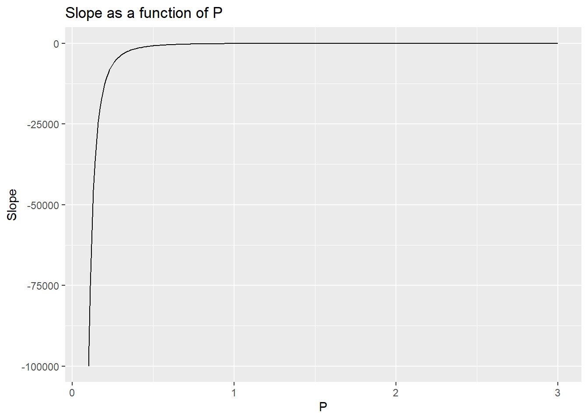
Calculate the elasticity of this non-linear demand curve as (slope \(\times P / Q\)).
e3 <- function(P) {-(50 * (P^-(2+1) * 2)) * P/Q3(P)}Plot the elasticity.
P_values_e3 <- seq(0.1, 1, by = 0.01)
df_e3 <- data.frame(P = P_values_e3, Elasticity = sapply(P_values_e3, e3))
p_e3 <-
ggplot(df_e3, aes(x = P, y = Elasticity)) +
geom_line() +
ggtitle("Elasticity as a function of P") +
xlab("P") + ylab("Elasticity")
p_e3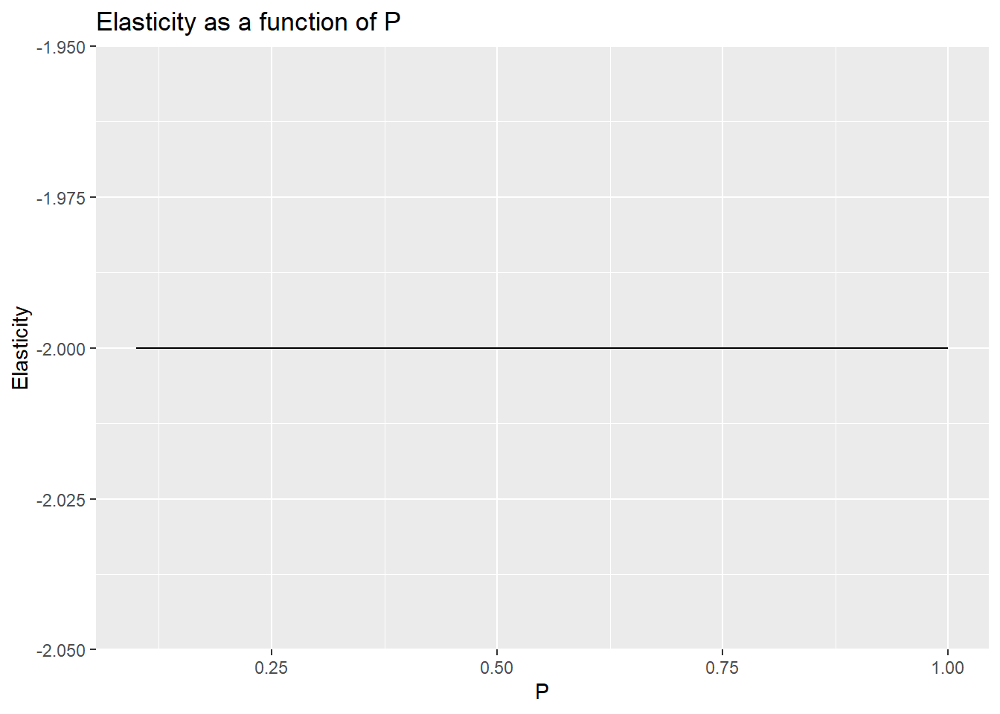
The expression for elasticity simplifies to -2. See a check on WolframAlpha.
A2 section
1) \(log(MORTALITY) = 7.5 - 0.5 \cdot log(INCOME)\)
Convert the constant in the log-linear model to its original scale.
log(exp(7.5))[1] 7.5Define the function for mortality as a function of income based on a log-log model. This means we convert the function back to its original scale: \(MORTALITY = exp(7.5) \cdot INCOME^{-0.5}\).
f1 <- makeFun(exp(7.5)*INCOME^-0.5 ~INCOME)Plot the mortality as a function of income without a specific range limit.
plotFun(f1(INCOME) ~ INCOME, main="Mortality as a function of income")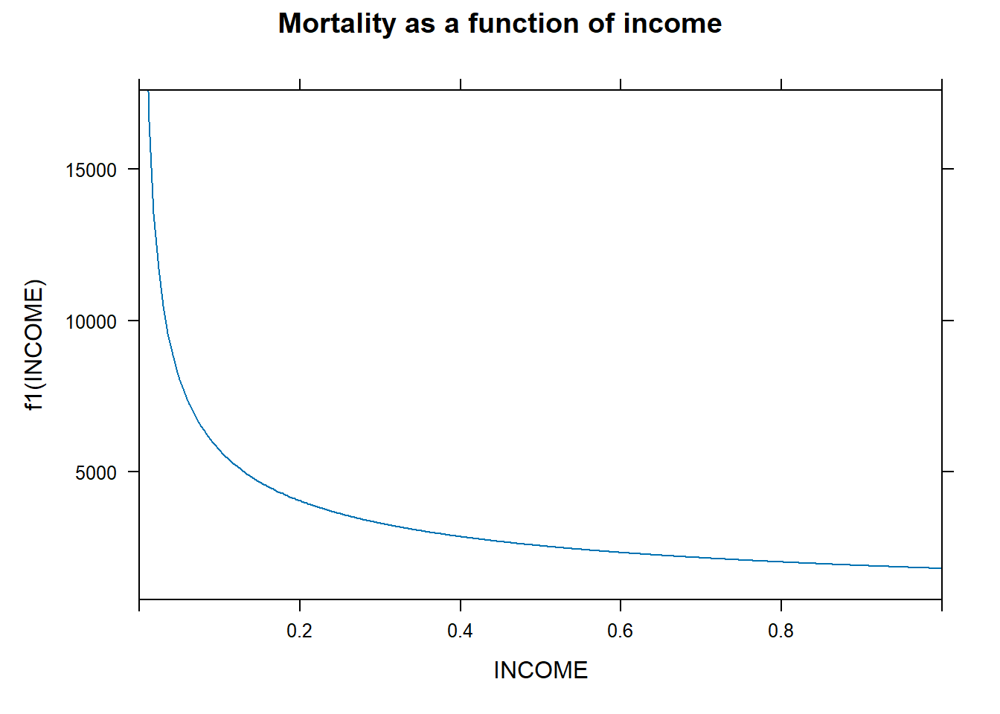
Plot the mortality as a function of income for the range \([0,30]\).
plotFun(f1(INCOME) ~ INCOME, xlim = c(0,30), main="Mortality as a function of income")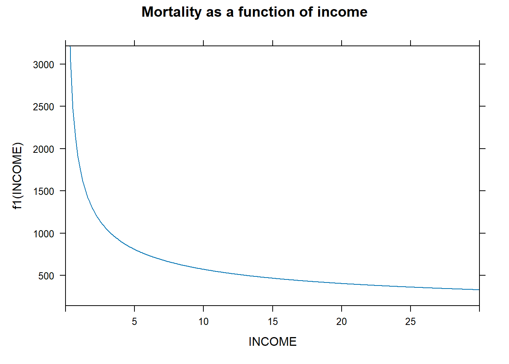
Calculate the slope (first derivative) of the mortality function with respect to income.
D(expression(exp(7.5)*INCOME^-0.5),"INCOME")-(exp(7.5) * (INCOME^-(0.5 + 1) * 0.5))Calculate the elasticity of the mortality curve as (slope \(\times\) INCOME / MORTALITY). For a log-log model of the form \(log(Y) = \beta_0 + \beta_1 log(X)\), the elasticity is simply \(\beta_1\). In this case, it should be -0.5.
e1 <- function(INCOME) {-(exp(7.5) * (INCOME^-(0.5 + 1) * 0.5))*INCOME/f1(INCOME)}
e1(1) # Evaluate elasticity at INCOME=1[1] -0.5e1(0.5) # Evaluate elasticity at INCOME=0.5[1] -0.5e1(3) # Evaluate elasticity at INCOME=3[1] -0.5